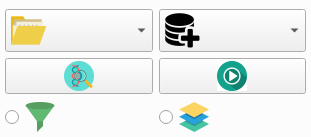

After load both a network model and test datasets, the layers will be automatically shown in the list on the left side. You can check on either the filter radio button to show weights of layers, or check on the maps radio button to show feature maps. Then you select the desired layer, if this layers has activation, there will be a plot of the weights or feature maps on the right side. You can also slide the horizontal slider bar at the bottom to change the number of slices to show on.
Figure:
Network Visualization Input
|
 |